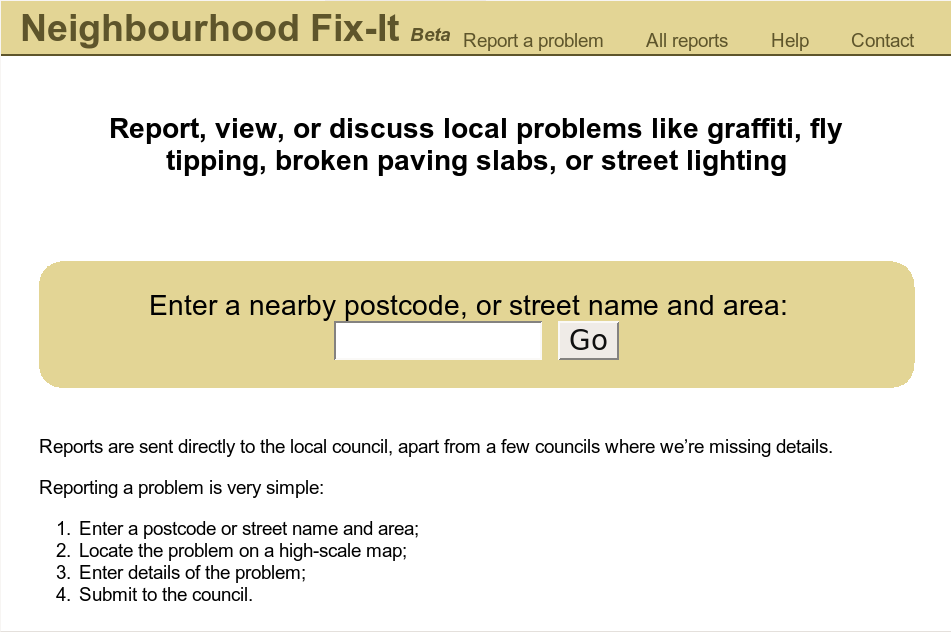
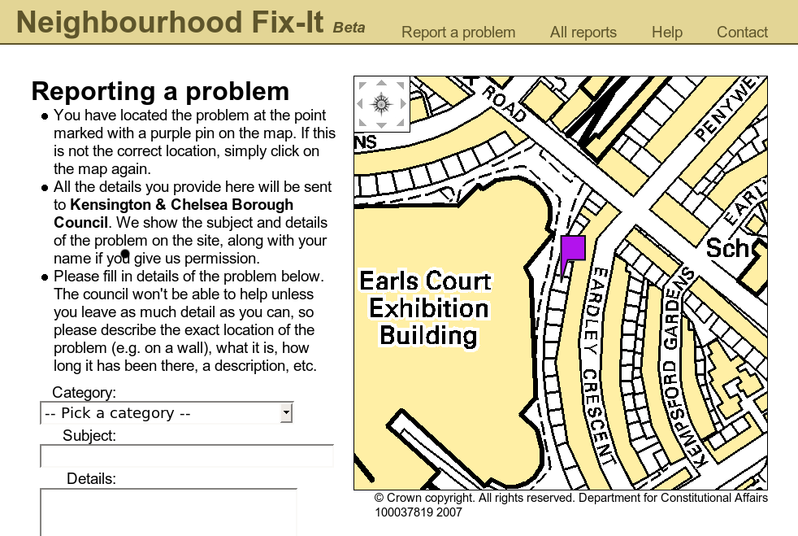
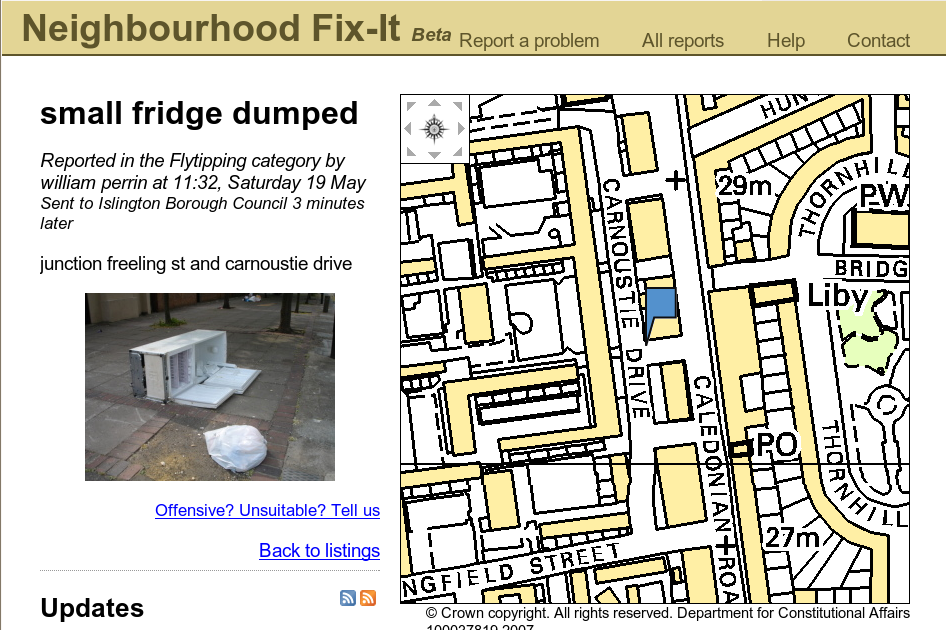
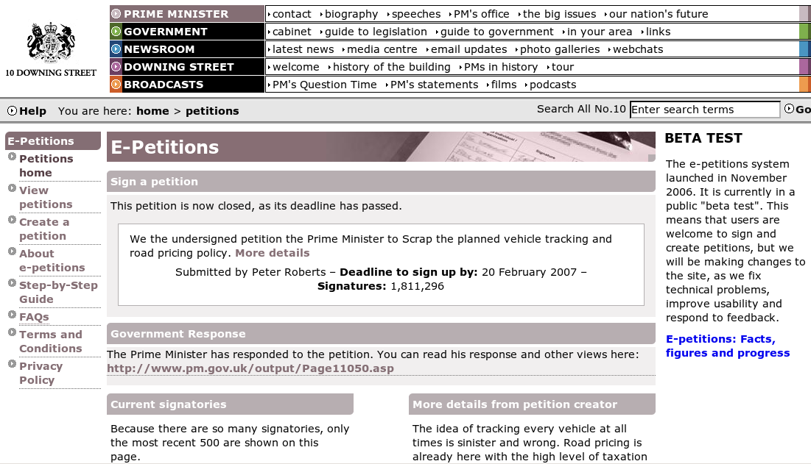

Release Early, Release Often
Francis Irving, mySociety
GCExpo, 13th June 2007
Best practice seminar in Citizen engagement
Involving the end user in service creation and design

We're a charity
Building action-oriented websites that deliver
simple, tangible benefits
at very low cost per person helped
Two sorts of projects
Grant funded charitable projects
Build and operate websites as commercial
contracts for Government and companies
Release early, Release often
We think you should release software and websites early, and release them often
Release early, Release often
- Launch early a robust version which has a minimal but useful set of features
- Watch your customers, encourage feedback from them
- Improve the site
- Iterate frequently - five minutes!
Users help you improve the service though real world use



People will never do what you expect them to do
- Tiny usability details really matter
- They add up to a big impact
Emails to councils improved
Government is a user too!
- Moved link to higher up email so more visible
- Added street address of nearest place to pin
Lots of other changes
Public sector example
- High profile public sector project
- Over 3 million users taking action
- Just over six months old
Released early, Released often

48 hours after launch
- Expats and overseas military personnel
- Sort list of petitions, e.g. by number of signers
- Added search facility
- This to a very high profile website
- Explicitly said it was a "beta"
- Users loved it
To recap...
- Software/websites should be released early and released often
- By default, for a new online service, release a robust beta version
- Improve interatively with your users based on real world feedback
NeighbourhoodFixIt.com
petitions.pm.gov.uk
Francis Irving